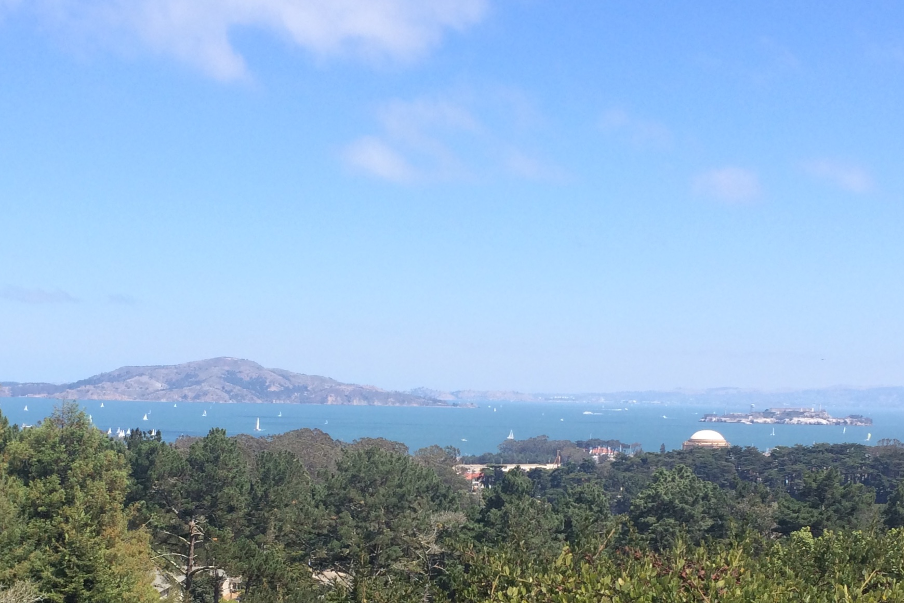

TRANSPORTATION
We have booked buses to pick you up in the heart of San Francisco, take you to the ceremony, and drop you off at the reception.
The buses will depart at 2:30 PM from outside the Westin St. Francis Hotel on Post Street—just off Union Square. The reception venue is close to downtown, and a short cab ride from the hotels.
CEREMONY
Inspiration Point, Arguello Blvd., The PresidioOur ceremony will be outside at beautiful Inspiration Point, starting at 3:30 PM. We're providing buses from Union Square to get you there on time, as there is no parking at the site (check back for details!). Even in summer, San Francisco can get chilly, so be prepared to bring a light jacket.
RECEPTION
The Chapel, 777 Valencia Street
After the ceremony, buses will take
you to The Chapel, in San
Francisco's Mission District, where
the party begins. There will be
drinks, followed by dinner and
dancing. Make sure you leave room
for cake!